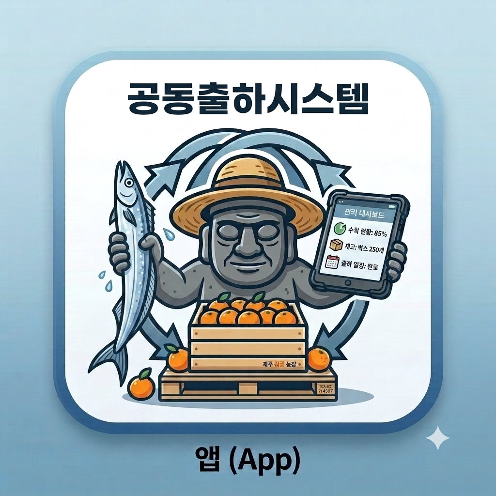

제주
모아
홈
차량 매칭
물류 최적화
?
-
-
로그아웃
🚚 AI National Transport Matching System
전국 권역별
운송 자동 매칭
86
전체 차량
61
배차 가능
25
운행 중
74
대기 농가
📍 전체 권역 차량 현황
전국 전체 배차 가능 차량을 표시합니다.
61
대 배차 가능
전체
배차 가능
운행 중
톤수
▼
1톤
2.5톤
5톤
11톤
🤖 AI 추천
AI Powered
✨ AI 최적 차량 추천
← 왼쪽에서 권역을 선택하면 AI가 최적 차량 TOP 3를 추천합니다.
🤖 AI 분석 중...
0
대 선택됨
🚚 선택 차량 매칭 확정
✅
운송 매칭 완료!
선택한 차량이 배정되었습니다.
확인
✕
🚚 실시간 배송 추적
ETA --분
출발
도착
🚚
제주모아 실시간 추적
배차 완료
이동 중
도착 임박
픽업 완료
🧑✈️
기사 이름
🚛 차량번호
📦 적재량
·
⭐
4.9
🔄
-
회
📞 전화
💬 문자
현재 위치
확인 중...
도착 예정
--분 후
이동 거리
-- km
예상 비용
--